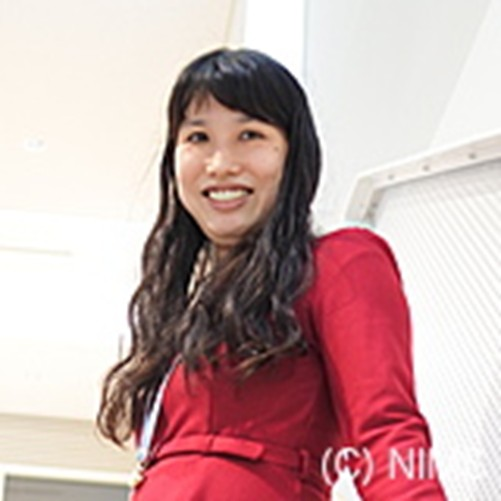
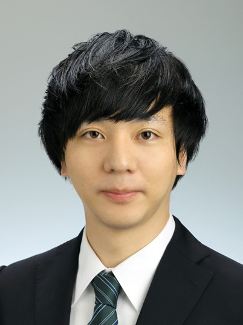

Members
私たちのチームを紹介します。多様なバックグラウンドを持つメンバーが、それぞれの強みを活かして活躍しています。
Researcher
出村 雅彦, Masahiko Demura
グループリーダー
技術開発・共用部門 部門長
外部連携部門 構造材料DXマテリアルズオープンプラットフォーム プラットフォーム長
技術開発・共用部門 情報基盤プラットフォーム プラットフォーム長
理事長補佐
東京工業大学 物質・情報卓越教育院/物質理工学院 特定教授
マテリアルズインテグレーションによる材料研究DX
計算材料工学、データ駆動、逆問題、産学連携プラットフォーム

戸田 佳明, Yoshiaki Toda
主幹研究員
外部連携部門 構造材料DXマテリアルズオープンプラットフォーム
横浜国立大学 大学院 工学研究院 客員准教授
超臨界地熱発電用耐熱材料の評価と開発
再生可能エネルギー、地熱発電、ケーシング材、耐熱鋼、腐食、酸化、高温高圧、超臨界水、水蒸気、酸性

渡邊 育夢, Ikumu Watanabe
主幹研究員
筑波大学 数理物質科学研究群 NIMS連係物質・材料工学サブプログラム 准教授 (NIMS連携大学院)
筑波大学 数理物質科学研究群 物性・分子工学サブプログラム 准教授 (NIMS連携大学院)
計算機を活用した材料研究・開発
計算機支援工学、マルチスケールモデリング、有限要素法、数理最適化
伊藤 海太, Kaita Ito
主任研究員
外部連携部門 構造材料DXマテリアルズオープンプラットフォーム
AE法による材料製造加工のインプロセスモニタリング
アコースティック・エミッション法、Acoustic Emission、非破壊評価、非破壊検査、インプロセスモニタリング、IoT

桂 ゆかり, Yukari Katsura
主任研究員
筑波大学 数理物質科学研究群 国際マテリアルズイノベーション学位プログラム 准教授 (NIMS連携大学院)
特定国立研究開発法人理化学研究所 革新知能統合研究センター（理研AIP） 客員研究員
大規模データベースStarrydataで材料科学の世界を俯瞰
マテリアルDX、データベース、マテリアルズ・インフォマティクス、新物質探索、無機結晶構造、熱電材料、磁石、準結晶、超伝導、電池材料

柿沼 洋, Hiroshi Kakinuma
招聘研究員
東北大学 材料科学高等研究所 准教授 (ジュニア主任研究者) (博士 (工学))
(兼任) 東北大学 金属材料研究所
マテリアルズインフォマティクス、機械学習、腐食防食、耐食性、水素脆化、アルミニウム合金、ステンレス鋼・低合金鋼・炭素鋼、マグネシウム合金、化成処理、電気化学計測、金属材料、腐食科学、水素センサー、局部電気化学計測
Postdoctoral Research Fellow

齋藤 圭, Kei Saito
博士研究員
Student
Graduate Research Assistant

ヤン ジイ, Yang Jiyi
NIMSジュニア研究員

タン ティアンウェン, Tianwen Tang
NIMSジュニア研究員

ラニ スンダス, Rani Sundas
NIMSジュニア研究員
Trainee

江 梓言, Ziyan Jiang
研修生 M2
筑波大学大学院
2025年4月～

Hang Dong
インターン D3
The University of New South Wales
2026年5月～

Mishra Aniket
インターン M1
Indian Institute of Technology, Kanpur
2026年5月～

Valentina Watanabe
インターン B4
Trinity College Dublin
2026年5月～

Thasleem Ibrahim
インターン B3
National Institute of Technology, Tiruchirappalli
2026年5月～

Sajja Akshith
インターン B3
National Institute of Technology, Tiruchirappalli
2026年5月～

Acharya Aditya
インターン B3
Indian Institute of Technology (BHU) Varanasi
2026年5月～
Visiting Researchers

藤田 絵梨奈, Erina Fujita
客員研究員
Project Technical Staff

間藤 智也, Tomoya Mato
NIMSエンジニア

田中 敦美, Atsumi Tanaka
テクニカルスタッフ

デウィ ヤナ, Dewi Yana
テクニカルスタッフ
山本 由希, Yuki Yamamoto
テクニカルスタッフ
谷口 祥子, Sachiko Taniguchi
テクニカルスタッフ
Office Staff

永瀬 幸子, Sachiko Nagase
オフィススタッフ
マテリアル基盤研究センター / 運営室
春日 真奈美, Manami Kasuga
オフィススタッフ
マテリアル基盤研究センター / 運営室

舘野 明美, Akemi Tateno
オフィススタッフ
技術開発・共用部門 / 運営室
Alumni
- 柳川 真之裕（筑波大学大学院）～2026年3月
- 陳 旭斐（筑波大学大学院）～2026年3月
- Gruen Florian（京都大学大学院）2026年1月～2026年3月
- 劉 大元（筑波大学大学院）～2026年2月
- Cecília Nemessányi（Budapest University of Technology and Economics / Architect）2025年6月～2026年1月
- Kaushik Raj Pyla（University of New South Wales (UNSW) Canberra）2025年5月～2025年8月
- RYJACEK Jiri（Czech Technical University）2025年6月～2025年7月